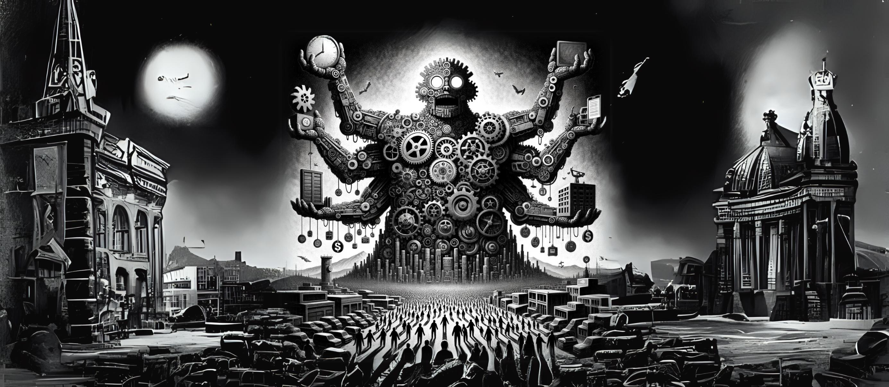

Abstract Link to heading
Just the other day, I found myself in conversation with my cousin, pondering a seemingly absurd yet intriguing question: What would the world look like if marketing was illegal? This might seem like a frivolous thought exercise, but it opened up a labyrinth of considerations about marketing’s pervasive influence on our lives and its slippery nature that defies concrete definition. The concept of marketing, much like trying to define what an apple is, gets blurrier the harder you look. It’s a continuous concept that resists being slotted into discrete categories. When does an apple become a pear (imagine an object 50% apple, 50% pear - what category does it fit in?), and when does an advertisement become something more sinister, like a tool for manipulation? Let’s chew over this idea: What if the world had significantly less marketing, or if it was even taboo to manipulate people into buying things they don’t need? There are always historical examples to draw from. Consider London in the early 20th century, where a skyline advertising ban forced architects to rely on design rather than neon signs to make buildings stand out. It was a time when the landscape wasn’t littered with advertisements, allowing for a different type of creativity and ingenuity to flourish. But why is marketing often seen as a destructive force? At its core, marketing is about making people aware of products, but it’s the way this is done that often sours the milk. Think about the journey from identifying a need to finding a solution. Before aggressive marketing, this journey was more organic, driven by genuine needs rather than manufactured desires. Now, let’s step back in time to understand how we got here. The story of marketing is as old as civilization itself, evolving from simple trade practices in ancient times. The Industrial Revolution marked a significant turn, as mass production and technological innovations changed the game. It created a need for businesses to inform consumers about their products, leading to the birth of modern marketing concepts. During the early 20th century, competition in the business world became fierce. This was the era of the production orientation, where the focus was on informing consumers about available products. Brands like Ford capitalised on this, streamlining production with their assembly lines and needing little marketing due to high demand and low competition. Then came the sales era, a time when companies like Procter & Gamble used radio broadcasts to reach consumers. This approach was about selling as many units as possible, often without much thought for customer experience or product quality. The marketing era, taking shape in the 1990s, brought a new focus: understanding and addressing the needs of target customers. Apple, for instance, differentiated itself by creating a superior customer experience, capturing a significant market share. But what about the dark side of marketing? The concept of Moloch, as described in Scott Alexander’s “Meditations on Moloch,” embodies this perfectly. It’s the idea of a system where everyone is unhappy, but no individual can change the status quo. Simply put game theory is the study of strategic decisions made by interacting individuals. You may have heard of the prisoner’s dilemma (picture below). This idea of this dilemma is that two individuals have been convicted of a crime. They are held in separate interrogation rooms. They are both offered the same deal. At the moment there is enough evidence to put them both away for 1 year. Both the prisoners are guilty of the crime. If one of them rats on the other one they will walk away scot-free, and the other prisoner will be imprisoned for 20 years. However, if both rat out the other, there is enough evidence to put them both away for 5 years each. So how does this relate to marketing? Well, the prisoner’s dilemma is a metaphorical ‘race to the bottom’ that occurs at system complexity of two agents (the acting in the interests of the individual in this instance reaps the worst social outcome). Moloch is this same social force taking place at a much higher system complexity. Here are some examples of ‘Moloch-like’ systems: The Arms Race: During the Cold War, the United States and the Soviet Union were involved in a nuclear arms race. Both nations continued to amass a large number of nuclear weapons, even though this escalation didn’t necessarily bring additional security. This situation was a classic Moloch scenario, where both sides were locked in a cycle of mutual distrust and arms buildup, unable to unilaterally disarm for fear of becoming vulnerable. Tragedy of the Commons: This is a situation where individual users, acting independently according to their own self-interest, overuse and deplete a shared resource, even though it is clear that this is not in anyone’s long-term interest. A common example is overfishing in international waters. Each fishing entity seeks to maximise their catch, but this collective action depletes fish stocks, ultimately harming everyone involved. Fast Fashion Industry: The fast fashion industry exemplifies a Moloch-like system where the continuous cycle of producing cheap, trendy clothes leads to environmental degradation, poor labour conditions, and a culture of disposable fashion. Consumers, driven by the latest trends and low prices, support this system, even though it may go against their values regarding sustainability and ethical labour practices. Social Media Dynamics: Social media platforms can create a Moloch-like system where the pursuit of likes, shares, and viral content often leads to the spread of misinformation, echo chambers, and negative mental health impacts. Users and platforms are caught in a cycle where sensational or polarising content is more engaging and thus more profitable, even though it may be harmful to the social fabric. The ‘Torches of Freedom’ Campaign: Initially framed as a campaign for female emancipation, it ended up promoting smoking among women, leading to broader health and societal costs. Once one cigarette company embarked on this path, others followed, creating a cycle where the original purpose was lost in the race for market dominance. Corporate ‘Race to the Bottom’: In global economics, companies often relocate production to countries with the lowest labour costs and least environmental regulations. This ‘race to the bottom’ benefits companies in the short term but leads to poor working conditions, low wages, and environmental degradation. It’s a system where companies feel compelled to participate in these practices to remain competitive, even though it’s detrimental in a broader sense. The irony is that marketing, while an effective tool for driving sales, can follow a similar pattern to unethical practices like bank robbing. Both lead to societal detriment, albeit through different pathways. The challenge is changing the rules of the game, much like the Head Injury Assessment (HIA) in rugby, which required a collective agreement to change the sport’s rules. As a result of the collective action, the sport has become much safer, but the interest of the individual was conflicted between wanting change, but also having to push the limits of rules while playing under them, even if this sometimes leads to head injury. With almost 8 billion players in the game of life, altering these rules is a mammoth task. As I wrap up this rant, it’s clear that the world of marketing is complex and multifaceted. It has evolved significantly over centuries, shaping, and being shaped by societal changes. From the humble beginnings of trade to the digital marketing era, it has been a journey of adaptation and transformation. But the question remains: How do we balance the undeniable benefits of marketing with the need to protect society from its potentially manipulative aspects? The answer lies not just in regulations but in a collective shift in consciousness, where marketing is used responsibly to benefit society as a whole. The history of marketing, as outlined by James Hardy in “The History Of Marketing: From Trade to Tech,” reveals a progression from simple trade to the complex, technology-driven strategies we see today【8†source】. The Industrial Revolution marked a significant turning point, introducing mass production and setting the stage for modern marketing techniques. Companies like Ford capitalised on these advancements, streamlining production, and making products like the And with that thought, I’ve just seen an ad reminding me to buy some new sunglasses, which I do actually need.